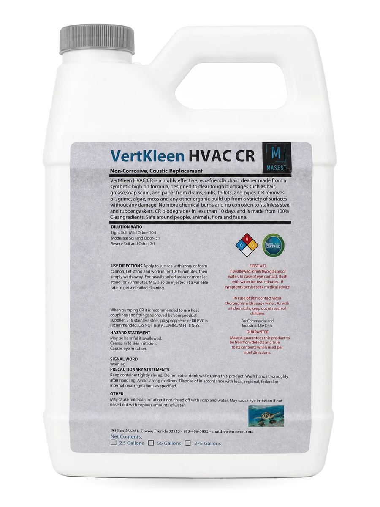

Higher-concentration CR formulation
Quoted before purchase.
- Concentrated alkaline cleaning programs
- Water-treatment dosing where strength matters
- High-pH cleaning at an HMIS 0-0-0 rating
A higher-concentration CR-family SKU for accounts that already understand CR workflows; confirm application notes before rollout. A higher-concentration version of VertKleen CR for demanding alkaline cleaning and water-treatment work. We quote it case by case while application notes and final SKU guidance are confirmed. Higher-concentration CR formulation Quoted before purchase.

Quoted before purchase.